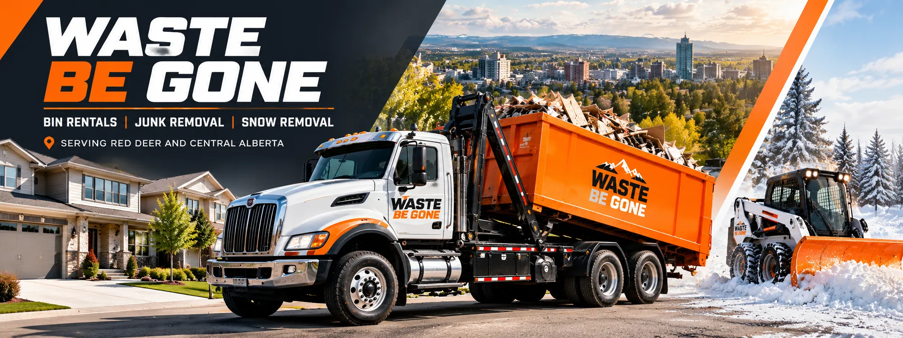

Reliable bin rentals & junk removal across Central Alberta
Professional dumpster rentals, junk removal and snow removal for homeowners, contractors and businesses in Red Deer and Central Alberta.
Quick quote
Tell us where and what. We will get back to you.
- Locally owned & family run
- Residential & commercial
- Serving Red Deer & Central Alberta
Waste removal solutions for every project
Dumpsters, junk hauling, permanent bins and winter service from one local team.
Residential dumpster rentals
Home cleanouts, renovations, yard work and DIY projects. Bin sizes from 4 to 30 yards with drop-off, pick-up and flexible rental periods.
Learn moreCommercial dumpster rentals
For construction sites, offices, retail and property cleanups. Heavy-duty containers and flexible terms.
Learn moreFull-service junk removal
House cleanouts, renovations, construction sites, appliances and metals. We do the heavy lifting.
Learn morePermanent front load bins
4 and 6 yard bins for commercial, residential, farm and acreage use. Weekly, biweekly or monthly pick-up.
Learn moreSpecialty bins
A 15 yard secure bin, a 5 yard dirt and concrete bin, and flat deck service for oversized items.
Learn moreSnow removal
Residential and commercial snow removal, including shoveling and parking lot plowing.
Learn moreFind the right dumpster for your project
Compare sizes, dimensions and what each one is best for.
Starting prices are listed for residential roll-off bins. Front load, specialty and commercial pricing is provided by quote. Dimensions as published by Waste Be Gone.
Residential dumpster rentals
- Home renovations
- Shed, basement and garage cleanouts
- Yard waste
- Moving and estate cleanouts
Commercial dumpster rentals
- Construction sites
- Retail and restaurant renovations
- Office buildings
- Property management
We handle the heavy lifting
From a single mattress to a full hoarder cleanout, we take it all. Homes, businesses and construction sites.
- Household junk and garbage pick-up
- Furniture and appliances
- Estate and hoarder clean-outs
- Hot tub removal
- Yard waste
- Small demolition: sheds, fences, decks
- Renovation waste
- Dumpster rentals
A local, family-owned business
Locally owned family business
Junk removal, roll-off dumpsters and snow removal from a Red Deer team.
Residential and commercial
Homeowners, contractors, builders, businesses, construction firms, towing companies and restoration companies.
Flexible rental options
Flexible rental periods and sizes from 4 to 30 yards.
Compact trucks for tighter spaces
Our compact trucks fit smaller spaces.
Recycling and donation efforts
We recycle and donate whenever we can.
Dumpster rentals made simple
Call or request a quote and we will help you pick the size.
- 01
Choose your bin
Select the dumpster size suitable for your project. We are happy to guide you.
- 02
We deliver
We deliver the dumpster to your location with clear delivery instructions and care for your property.
- 03
We pick it up
Once it is full, call the team to arrange pick-up or a bin swap.
Reliable snow removal when Alberta winter hits
Residential and commercial snow removal from the same local team you trust for bins and junk removal.
- Residential snow removal
- Commercial snow removal
- Shoveling
- Parking lot plowing
We recycle and donate whenever we can
Waste Be Gone keeps useful materials out of the landfill where possible.
What customers say
Recent reviews from Google. Select a review to read it in full.
“Amazing communication. Timely drop off and pick up...”
“The process was smooth from start to finish and they...”
Read full review
“I work for Care Facility, we have had a few urgent need...”
Read full review
Proudly serving Red Deer & Central Alberta
Bin rentals, junk removal and snow removal for Red Deer and Central Alberta communities. Not sure if we cover your location? Call us.
Call 403-848-4825Hours
| Monday - Friday | 8:00 am - 7:00 pm |
| Saturday | 10:00 am - 4:00 pm |
| Sunday | Closed |
28 Page Avenue, Red Deer, Alberta T4P 1J8
Ready to clear the clutter?
Whether you need a dumpster rental, junk removal or commercial waste service, our team is ready to help.
403-848-4825Mon - Fri 8 am - 7 pm · Sat 10 am - 4 pm